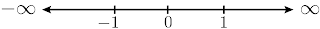

Números Reales
Introducción
El concepto de número es uno con el que estamos familiarizados desde una corta edad, y no obstante sigue siendo un concepto increíblemente difícil de definir. En las secciones venideras se verá que la noción de número real se puede comprender a partir de sus propiedades, por lo que no nos preocuparemos por dar una definición concreta.
Los llamados tipos de números conllevan un sentido de historicidad, nos arrojan una fragmentación de los reales basada en el acontecer histórico del ser humano: la forma en que el humano encontró a los números con el paso del tiempo. Los tipos de números que nos competen son:
- Los números naturales \(\mathbb{N}\), entendidos comúnmente como los números de contar, i.e. $$\mathbb{N}=\{1,2,3,...\}$$
- Los números enteros \(\mathbb{Z}\), que introducen la noción del cero y de los negativos, además de contemplar a los naturales, i.e. $$\mathbb{Z}=\{...,-3,-2,-1,0,1,2,3,...\}$$
- Los números racionales \(\mathbb{Q}\), que incluyen el concepto de fracción, los números que pueden ser expresados como un cociente de dos enteros, i.e. $$\mathbb{Q}=\left\{\frac{p}{q}\,|\,p,q\in\mathbb{Z};q\not=0\right\}$$
- Los números irracionales \(\mathbb{Q'}\) o \(\mathbb{I}\), probablemente los más difíciles de definir en esta lista. Un número es considerado irracional si no es racional (evidentemente), lo que quiere decir que es imposible expresarlo como un cociente de dos enteros. Algunos ejemplos de irracionales son los números \(\pi\), \(e\) y \(\sqrt{2}\). Generalmente no es para nada trivial demostrar que un número es irracional, aunque la demostración de la irracionalidad de \(\sqrt{2}\) se verá en una sección futura (la tarea).
- Entenderemos a los números reales \(\mathbb{R}\) como la unión de los racionales y los irracionales, i.e. $$\mathbb{R}=\mathbb{Q}\cup\mathbb{Q'}$$
Los números reales conllevan inherentemente la idea de continuidad, que por ahora entenderemos como una carencia de huecos en los reales (no existen dos números reales entre los cuales no haya otro real). En matemáticas es de gran ayuda poder ilustrar el tema en cuestión mediante diagramas o dibujos, aunque sea como un apoyo. Así, los números reales se asocian a los puntos de una línea recta, llamada la recta real, que va en concordancia con la idea de carencia de huecos en los reales. En la recta se escoge un punto arbitrario, que jugará el rol del cero, y una unidad (de longitud) para poder ubicar a los demás reales a partir del cero. Por convención, los números positivos se hallan a la derecha del cero y los negativos se hallan a su izquierda.
Propiedades de los números Reales
A lo largo de nuestra vida académica hemos cursado una multitud de materias donde se han atacado "de lado" los conceptos que se verán en esta sección. Aquí se hará evidente que todas las operaciones y características de los números (entiéndase por ello la suma, la resta, la multiplicación, la división, la factorización, los productos notables, la resolución de ecuaciones e inecuaciones y otros procesos algebraicos) se pueden sintetizar en una serie de propiedades sencillas e inmediatas.
El sistema de los números reales es un conjunto \(\mathbb{R}\), junto con dos operaciones \(+\) y \(\cdot\) (suma y producto, o adición y multiplicación) y una relación de orden \( < \) (leída "es menor que"), que satisfacen una serie de axiomas o propiedades, que se estudiarán en tres subsecciones siguientes.
Propiedades de campo de los Reales
Para cualesquiera \(a,b,c\in\mathbb{R}\) se satisfacen las siguientes propiedades:
- Cerradura $$\text{A}_1:\qquad a+b\in\mathbb{R}$$ $$\text{M}_1:\qquad a\cdot b\in\mathbb{R}$$
- Conmutatividad $$\text{A}_2:\qquad a+b=b+a$$ $$\text{M}_2:\qquad a\cdot b=b\cdot a$$
- Asociatividad $$\text{A}_3:\qquad a+(b+c)=(a+b)+c$$ $$\text{M}_3:\qquad a\cdot (b\cdot c)=(a\cdot b)\cdot c$$
- Existencia del elemento neutro $$\text{A}_4:\qquad \exists 0\in\mathbb{R}: \forall a\in\mathbb{R},\, a+0=0+a=a$$ $$\text{M}_4:\qquad \exists 1\in\mathbb{R},\,1\not=0: \forall a\in\mathbb{R}, \, a\cdot 1=1\cdot a=a$$
- Existencia de elementos inversos $$\text{A}_5:\qquad \forall a\in\mathbb{R}\quad \exists -a\in\mathbb{R}:a+(-a)=-a+a=0$$ $$\text{M}_5:\qquad \forall a\in\mathbb{R}-\{0\}\quad \exists a^{-1}\in\mathbb{R}-\{0\}:a\cdot a^{-1}=a^{-1}\cdot a=1$$
- Distributividad $$\text{D}:\qquad a\cdot (b+c)=a\cdot b+a\cdot c$$
Nótese que las propiedades \(\text{A}_1\) hasta \(\text{A}_5\) refieren a la adición, mientras que \(\text{M}_1\) a \(\text{M}_4\) son propiedades análogas de la multiplicación. Las propiedades \(\text{A}_4\) y \(\text{M}_4\) definen la existencia de dos elementos neutros para cada operación, distintos entre ellos y llamados "cero" y "uno", respectivamente. La propiedad \(\text{D}\) relaciona ambas operaciones.
Aunque no se incluye ninguna definición para la relación de equivalencia \(=\), se entiende que \(a=b\) significa que \(a\) y \(b\) son el mismo elemento. Así, se obviarán identidades como "\(a=b \land b=c \Rightarrow a=c\)" y "\(a=b \Rightarrow a+c=b+c\)".
De las propiedades de campo se desprende una cantidad colosal de teoremas, de los cuales se enunciarán y demostrarán varios (los más útiles para nuestros fines).
Relación de orden en los reales
Dentro de los reales está contenido un conjunto llamado el conjunto de los positivos, denotado como \(\mathbb R^+\) o simplemente \(P\). Este conjunto también cumple con las dos propiedades de cerradura ya expuestas en la sección anterior; es decir, se cumple que
$$\text{A}_1':\qquad a+b\in\mathbb{R}^+$$ $$\text{M}_1':\qquad a\cdot b\in\mathbb{R}^+$$Además de una nueva propiedad, denominada tricotomía, que afirma lo siguiente:
$$\text{T}:\,\forall a\in\mathbb{R}\text{ se cumple una y solo una de las siguientes tres afirmaciones :}$$- \( a \in \mathbb R^{+} \)
- \( -a \in \mathbb R^{+} \)
- \( a=0 \)
Y motivados por estas propiedades se define la relación de orden en los reales.
Definición. Se define la relación de orden \( < \) en los reales, leída "es menor que", para dos elementos \(a,b\in\mathbb R\) como: $$ a < b \iff b-a \in \mathbb R^{+} $$
Además, se define lo siguiente:
Definición. Dados \(a,b\in\mathbb R\), se define:
- \( a > b \iff b < a\), y \( > \) se lee "mayor que".
- \( a\leq b \iff a < b \lor a=b\), y \(\leq\) se lee "menor o igual que".
- \( a\geq b \iff a > b \lor a=b\), y \(\geq\) se lee "mayor o igual que".
Esta relación de orden cumple con una serie de "axiomas" (que con estas definiciones pasan a ser teoremas), que a continuación se enunciarán y demostrarán. Nótese que el primero de ellos es una equivalencia de la tricotomía ya expuesta.
TricotomíaDados \(a,b\in\mathbb R\), se cumple una y solo una de las siguientes tres afirmaciones
- \( a < b \)
- \( a > b \)
- \( a = b \)
Demostración. Se aplicará la propiedad ya expuesta de tricotomía sobre el número \(b-a\). De ella se tiene que se cumple una y solo una de las siguientes tres afirmaciones:
- \( b-a \in \mathbb R^+ \)
- \( -(b-a) \in \mathbb R^+ \)
- \( b-a = 0 \)
De \(i)\) se sigue inmediatamente que \(a < b\). En \(ii)\) se observa que \(-(b-a)=a-b\in\mathbb R^+\), de donde \(b < a\) y, por definición, \(a > b\). De \(iii)\) se sigue inmediatamente que \(a=b\). \(\blacksquare\)
Transitividad
Sean \(a,b,c\in\mathbb R\). Si \(a < b\) y \(b < c\), entonces \(a < c\).
Demostración. Por definición, la hipótesis afirma que \(b-a\in\mathbb R^+\) y \(c-b\in\mathbb R^+\). Por la propiedad de cerradura de la suma en \(\mathbb R^+\) se tiene que \((b-a)+(c-b)\in\mathbb R^+\). Más aún, \((b-a)+(c-b)=c-a\), por lo que \(c-a\in\mathbb R^+\) y, por definición, \(a < c\). \(\blacksquare\).
Aditividad
Sean \(a,b,c\in\mathbb R\). Si \(a < b\), entonces \(a+c < b+c\).
Demostración. Por definición, la hipótesis afirma que \(b-a\in\mathbb R^+\). Obsérvese que \(b-a=b-a+c-c=b+c-a-c=(b+c)-(a+c)\). Como \(b-a\in\mathbb R^+\), entonces \((b+c)-(a+c)\in\mathbb R^+\) y, por definición, \(a+c < b+c\). \(\blacksquare\)
Propiedad multiplicativa
Sean \(a,b,c\in\mathbb R\). Si \(a < b\) y \(c\in\mathbb R^+\), entonces \(ac < bc\).
Demostración. Por definición, la hipótesis afirma que \(b-a\in\mathbb R^+\) y \(c\in\mathbb R^+\). Por la propiedad de cerradura de la multiplicación en \(\mathbb R^+\) se sigue que \((b-a)c\in\mathbb R^+\). Se tiene que \((b-a)c=bc-ac\). Así, \(bc-ac\in\mathbb R^+\) y, por definición, \(ac < bc\). \(\blacksquare\)
Estos cuatro "axiomas" de orden se usarán extensivamente para demostrar más teoremas respecto a las relaciones de orden.
Nótese que \(a > 0\iff a-0=a\in\mathbb R^+\). Por lo tanto, se tomarán como afirmaciones equivalentes \(a\in\mathbb{R}^+\) y \(a > 0\).
Intervalos
Los intervalos serán una herramienta de gran utilidad conforme se desarrollen los subsecuentes temas. Intuitivamente, entendemos los intervalos son subconjuntos continuos de números reales, i.e. números reales tomados uno tras otro entre dos extremos determinados. Gráficamente se pueden entender como segmentos de la recta real. Se definirán como sigue
Def. Sean \(a,b\in\mathbb R\):
- El intervalo abierto \((a,b)\) es un conjunto definido como $$(a,b)=\{x\in\mathbb R\,|\, a < x < b\}$$
- El intervalo cerrado \([a,b]\) es un conjunto definido como $$[a,b]=\{x\in\mathbb R\,|\, a\leq x\leq b\}$$
- Los intervalos semiabiertos/semicerrados son los conjuntos definidos como $$(a,b]=\{x\in\mathbb R\,|\, a < x\leq b\}$$ $$[a,b)=\{x\in\mathbb R\,|\, a\leq x < b\}$$
- Los intervalos infinitos son los conjuntos definidos como $$(a,\infty)=\{x\in\mathbb R\,|\, a < x\}$$ $$(-\infty,a)=\{x\in\mathbb R\,|\, x < a\}$$ $$[a,\infty)=\{x\in\mathbb R\,|\, a\leq x\}$$ $$(-\infty,a]=\{x\in\mathbb R\,|\, x\leq a\}$$
Es muy importante cuidar el orden en que se escriban \(a\) y \(b\). Nótese que, por la naturaleza de la definición, si \(a > b\) entonces \((a,b)=[a,b]=\emptyset\)
Valor absoluto
Def. El valor absoluto de un número \(x\), denotado por \(|x|\), se define como
$$ |x|=\left\{\begin{array}\\ x&& x\geq 0 \\ -x&& x < 0 \end{array}\right.$$Geométricamente, el valor absoluto representa la distancia que hay entre el cero y cualquier número en la recta real, como si se midiera con una regla. Es fácil ver (aunque se demostrará en esta sección) que el valor absoluto es siempre positivo, propiedad que va de acuerdo con nuestra noción intuitiva de distancia. El valor absoluto de la diferencia de dos números \(a\) y \(b\), \(|a-b|\) o \(|b-a|\) (ya se demostrará que son iguales), representa geométricamente la distancia entre ambos números sobre la recta de los reales.
A continuación se enunciarán y demostrarán una serie de teoremas respecto al valor absoluto.
TEOREMAS
Def. Se define a la raíz cuadrada de un número \(x\geq 0\), denotada \(\sqrt{x}\), como un número tal que \(\sqrt{x} \cdot \sqrt{x} = \sqrt{x}^2=x\), con \(\sqrt{x}\geq 0\).
Obsérvese que \(\sqrt{x^2}=|x|\)
Desigualdades
\(4x-5 < 7x-4\)
\(\implies -5+4 < 7x-4x \implies -1 < 3x\implies x > -\frac{1}{3}\)Por lo que \(\boxed{x\in(-\frac{1}{3},\infty)}\)
\(x < \frac{5x-2}{2} < 7-x\)
- \(x < \frac{5x-2}{2} \implies 2x < 5x-2 \implies 2 < 3x \implies x > \frac{2}{3}\)
Por lo que \(x\in(\frac{2}{3},\infty)\)
- \(\frac{5x-2}{2} < 7-x\implies 5x-2 < 14-2x \implies 7x < 16\implies x <
\frac{16}{7}\)
Por lo que \(x\in(-\infty,\frac{16}{7})\)
Así, \(x\in(\frac{2}{3},\infty)\cap(-\infty,\frac{16}{7})\), de donde
\(\boxed{x \in ( \frac{2}{3},\frac{16}{7} ) } \)
\(\frac{3}{x+5} < x\)
- \(x+5 > 0\implies x > -5\) \(\implies 3 < x(x+5) = x^{2} + 5x\)
- \(x+5 < 0\implies x < -5\) \(\implies 3 < x(x+5)\) \(\vdots\) \( \mid x+\frac{5}{2} \mid < \frac{\sqrt{37}}{2}\) \(-\frac{\sqrt{37}}{2} < x + \frac{5}{2}<\frac{\sqrt{37}}{2}\) \(\frac{-5-\sqrt{37}}{2} < x < \frac{-5+\sqrt{37}}{2}\) Así, \(x\in(\frac{-5-\sqrt{37}}{2},\frac{-5+\sqrt{37}}{2})\cap(-\infty,-5)\). Por lo tanto, \(x\in(\frac{-5-\sqrt{37}}{2},-5)\). Así, \(\boxed{x\in(\frac{-5-\sqrt{37}}{2},-5) \cup (\frac{-5+\sqrt{37}}{2},\infty)}\)
\(\implies x^{2} + 5x + \frac{25}{4} > 3 + \frac{25}{4}\)
\(\implies (x + \frac{5}{2})^{2} > \frac{37}{4}\)
\(\implies |x + \frac{5}{2}| > \frac{\sqrt{37}}{2}\)
\(\implies x + \frac{5}{2} > \frac{\sqrt{37}}{2}\) o \(x+\frac{5}{2} < -\frac{\sqrt{37}}{2}\)
\(\implies x>\frac{-5+\sqrt{37}}{2}\) o \(x < \frac{-5-\sqrt{37}}{2}\)
Así, \( x \in [( - \infty, \frac{-5 -\sqrt{37}}{2}) \cup (\frac{ -5 + \sqrt{37}}{2}, \infty)] \cap (-5,\infty)\).
Por lo tanto, \(x\in(\frac{-5+\sqrt{37}}{2},\infty)\).
\(x^{2} < 4x\)
\(\implies x^{2} - 4x < 0 \implies x^{2} - 4x + 4 < 4 \implies (x-2)^{2} < 4\) \(\implies \lvert x-2 \rvert < 2\) \(\implies -2 < x-2 < 2\) \(\implies 0 < x < 4\) Por lo tanto, \(\boxed{x\in(0,4)}\)\(x^{2} \leq x+2\)
\(\implies x^{2} - x \leq 2 \implies x^{2} - x + \frac{1}{4} \leq 2 + \frac{1}{4} \implies (x - \frac{1}{2})^{2} \leq \frac{9}{4}\) \(\implies | x - \frac{1}{2} | \leq \frac{3}{2}\) \(\implies -\frac{3}{2} \leq x-\frac{1}{2} \leq \frac{3}{2}\) \(\implies -1 \leq x \leq 2 \) Por lo tanto, \(\boxed{x\in(-1,2)}\)\(\frac{x}{1-x} \geq \frac{2+x}{x}\)
- \(1-x > 0\) y \(x > 0 \implies x > 0\) y \(x < 1\implies 0 < x < 1\) \(\implies x^{2} \geq (2+x)(1-x) = 2 -2x + x -x^{2} \)
- \(1-x > 0\) y \(x < \implies x < 0\) y \(x < 1\implies x < 0\) \(\implies x^2\leq (2+x)(1-x)\)
- \(1-x < 0\) y \(x > 0\implies x > 0\) y \(x > 1 \implies 1 < x\) \(\implies x^2\leq (2+x)(1-x)\)
- \(1-x < 0\) y \(x < 0\implies x < 0\) y \(x > 1\) ! Por lo tanto, \(x\in\emptyset\).
\(\implies x^{2} \geq 2-x-x^2 \implies 2x^{2} + x \geq 2\)
\(\implies x^{2} + \frac{1}{2}x \geq 1 \implies x^{2} + \frac{1}{2}x + \frac{1}{16} \geq 1 + \frac{1}{16}\)
\(\implies (x + \frac{1}{4})^{2} \geq \frac{17}{16}\implies |x+\frac{1}{4}|\geq \frac{\sqrt{17}}{4}\)
\(\implies x + \frac{1}{4}\geq\frac{\sqrt{17}}{4}\) o \(x+\frac{1}{4}\leq -\frac{\sqrt{17}}{4}\)
\(\implies x \geq \frac{-1+\sqrt{17}}{4}\) o \(x \leq \frac{-1-\sqrt{17}}{4}\)
Así, \(x\in\{(-\infty,\frac{-1-\sqrt{17}}{4})\cup(\frac{-1+\sqrt{17}}{4},\infty)\}\cap(0,1)\).
Por lo tanto, \(x\in [\frac{-1+\sqrt{17}}{4},1)\).
\(\vdots\)
\(\implies | x + \frac{1}{4} | \leq \frac{\sqrt{17}}{4}\)
\(\implies -\frac{\sqrt{17}}{4} \leq x + \frac{1}{4} \leq \frac{\sqrt{17}}{4}\)
\(\implies \frac{-1-\sqrt{17}}{4}\leq x \leq \frac{-1+\sqrt{17}}{4}\)
Así, \(x\in [\frac{-1-\sqrt{17}}{4},\frac{-1+\sqrt{17}}{4}] \cap (-\infty,0)\).
Por lo tanto, \(x \in [\frac{-1-\sqrt{17}}{4},0)\).
\(\vdots\)
\(\implies \frac{-1-\sqrt{17}}{4} \leq x \leq \frac{-1+\sqrt{17}}{4}\)
Así, \(x\in [\frac{-1-\sqrt{17}}{4},\frac{-1+\sqrt{17}}{4}]\cup(1,\infty)\).
Por lo tanto, \(x \in \emptyset\).
Así, \(\boxed{x \in [\frac{-1-\sqrt{17}}{4},0) \cup [\frac{-1+\sqrt{17}}{4},1)}\)
\(\frac{x^{2} - 1}{x^{2} + 2} < 3\)
- \(x^{2} + 2 > 0 \implies x^{2} > -2\) (tautología, pues \(x^{2} \geq 0 > -2\)) \(x^{2} - 1 = 3x^{2} + 6 \implies -7 < 2x^{2} \implies x^{2} > -\frac{7}{2}\) (tautología, pues \(x^{2} \geq 0 > -\frac{7}{2}\))
- \(x^{2} + 2 < 0 \implies x^{2} < -2\) ! Así, \(\boxed{x \in \mathbb{R}}\)
Por lo tanto, \(x \in \mathbb{R}\).
\(\frac{x^{2} - 4x}{x^{2}} \geq 1-x\)
Como \(x^2\geq 0\),
\(x^{2} - 4x \geq x^{2}(1-x) \implies x^{2} - 4x \geq x^{2} - x^{3} \)\(\implies -4x \geq -x^{3} \implies x^{3} - 4x \geq 0 \implies x(x^{2} - 4) \geq 0\)
Que se cumple si:
- \(x \geq 0\) y \(x^{2} - 4 \geq 0\) \(\implies x \geq 0\) y \(x^{2} \geq 4\) \(\implies x\geq 0\) y \((x\geq 2\) o \(x\leq -2)\)
- \(x < 0\) y \(x^{2} - 4 < 0\) \(\implies x < 0\) y \(x^{2} < 4\) \(\implies x < 0\) y \(-2 < x < 2\)
\(\implies x\geq 2\), i.e. \(x\in [2,\infty)\).
\(\implies 0 < x < 2\), i.e. \(x\in (0,2)\).
Por lo tanto, \(x\in(0,2)\cup [2,\infty)\), de donde\(\boxed{x\in (0,\infty)}\)
Axioma del supremo
Comencemos dando algunas definiciones importantes.
Def. Considérese un conjunto \(A\) no vacío de números reales.
- Un número real \(c\) es elemento máximo de \(A\), denotado como \(c=\text{máx}(A)\), si \(a) c\in A\) y \(b) c\geq a \;\forall a \in A\)
- Un número real \(c\) es elemento mínimo de \(A\), denotado como \(c=\text{mín}(A)\), si \(a) c\in A\) y \(b) c\leq a \;\forall a \in A\)
Def. Considérese un conjunto \(A\) de números reales.
- Un número real \(c\) es una cota superior de \(A\) si \(c\geq a \;\forall a \in A\). Se dice que el conjunto \(A\) está acotado superiormente si tiene una cota superior.
- Un número real \(c\) es una cota inferior de \(A\) si \(c\leq a \;\forall a \in A\). Se dice que el conjunto \(A\) está acotado inferiormente si tiene una cota inferior.
- Se dice que el conjunto \(A\) está acotado si está acotado superior e inferiormente.
Def. Considérese un conjunto \(A\) no vacío de números reales.
- Un número real \(c\) es el supremo de \(A\), denotado como \(c=\text{sup}(A)\), si \(a) c\) es cota superior de \(A\) y \(b) c\leq x \) para toda cota superior \(x\) de \(A\).
- Un número real \(c\) es el ínfimo de \(A\), denotado como \(c=\text{ínf}(A)\), si \(a) c\) es cota inferior de \(A\) y \(b) c\geq x \) para toda cota inferior \(x\) de \(A\).
En la introducción al tema de los números reales se habló de una característica importante de los reales: no hay dos reales entre los cuales no exista otro real. Esta es una idea de extrema importancia, pues podemos hablar de una noción de continuidad en ellos, una carencia de agujeros en los reales. Esta idea no está soportada por ninguno de los axiomas que hasta aquí se han expuesto, por lo que hace falta un axioma más para completar nuestra discusión de los reales.
Para motivar el axioma faltante, piénsese en el conjunto \(A=\{x\in\mathbb R\,|\,x > 0;x^2 < 2\}\). Es evidente que \(\text{sup}(A)=\sqrt{2}\). No obstante, ninguna de las propiedades de los reales nos ha asegurado hasta ahora la existencia de un número \(x\) tal que \(x^2=2\), por lo que, hasta donde sabemos, no está asegurada la existencia de \(\sqrt{2}\) (siempre podemos agregar un axioma que diga "existe un número \(x\) tal que \(x^2=2\)", pero esto no resolvería todos nuestros problemas, además de ser poco elegante). Si el número \(\sqrt{2}\) no existiera, entonces no podríamos asegurar la existencia de una cota superior mínima de \(A\), pues para cualquier \(y > \sqrt{2}\) siempre podríamos escoger un número \(y' > \sqrt{2}\) más pequeño que \(y\). Ahora que hemos descubierto este problema, es casi evidente la nueva propiedad que necesitan los números reales para rellenar estos hoyos que hemos encontrado.
Axioma del supremo. Todo subconjunto de \(\mathbb R\) no vacío y acotado superiormente tiene un supremo.
Este axioma es la cereza sobre el pastel de los números reales, y asegura al fin que los números reales no tienen hoyos. A continuación pasaremos a demostrar que el supremo de cualquier conjunto es único, no sin antes demostrar un lema que nos servirá de apoyo.
Lema. Sean \(a,b\in\mathbb{R}\). Si \(a\leq b\) y \(b\leq a\), entonces \(a=b\).
Demostración. Por la definición de \(\leq\), la hipótesis afirma que $$(a=b\lor a < b)\land(a=b\lor b < a)$$
De donde se sigue que \((a=b)\lor (a < b\land b < a)\). Por la propiedad de tricotomía se tiene que \(a < b\land b < a\) es una contradicción, por lo que \(a=b\).
Teorema de unicidad del supremo. El supremo de cualquier conjunto de números reales es único.
Demostración. Sean \(\alpha\) y \(\beta\) ambos supremos de un conjunto \(A\supseteq\mathbb{R}\). Así, ambos son cotas superiores de \(A\). Por la definición de supremo se tiene que \(\alpha\leq\beta\) y \(\beta\leq\alpha\), y por el lema se concluye que \(\alpha=\beta\). \(\blacksquare\)
Principio de inducción matemática
En lógica se dice que un argumento es deductivo si va de la generalidad a la particularidad, e.g.
- Todos los hombres tienen barba.
- Sócrates es hombre.
- Por lo tanto, Sócrates tiene barba.
De igual forma, se dice que un argumento es inductivo si va de una aseveración particular a un caso general, e.g.
- Juan es alto y corre rápido.
- María es alta y corre rápido.
- Pepe es alto y corre rápido.
- Por lo tanto, toda la gente alta también corre rápido.
Nótese que esto último es una generalización apresurada. Por lo general, los argumentos inductivos no son válidos en la vida cotidiana; no obstante, en las matemáticas hay un principio fortísimo que se fundamenta en el concepto de argumento inductivo.
Piénsese en los números naturales como si fueran un juego de dominó, donde cada número es una ficha. Supóngase que se colocan todos los números-ficha en una fila, parados uno tras otro. Si yo tirara la primera ficha, y pudiera asegurar que cada ficha que cayera tirará a su sucesora, entonces puedo asegurar que todos los números-ficha van a caer.
Esta es la idea detrás del principio de inducción, el cual postula lo siguiente:
Si existe un determinado número natural \(n\) que cumple una propiedad \(P\), y si este hecho implica que \(n+1\) también cumple \(P\), entonces todos los números naturales a partir de \(n\) la cumplirán.
Partiendo de este principio, una demostración por inducción consiste en los siguientes pasos:
- Base inductiva. Consiste en probar que la propiedad a demostrar se cumple para algún \(n\in\mathbb{N}\) en particular. Por lo general se toma \(n=1\).
- Hipótesis inductiva. Se supone válida la propiedad para algún número natural \(n=k\).
- Paso inductivo. Se demuestra a partir de la hipótesis inductiva que \(n=k+1\) cumple con la propiedad también.